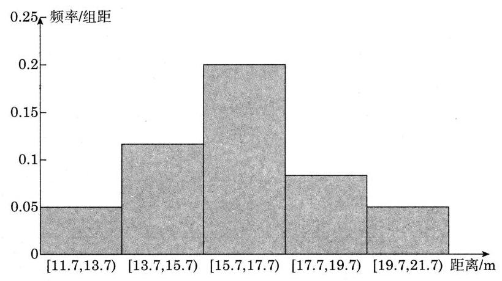
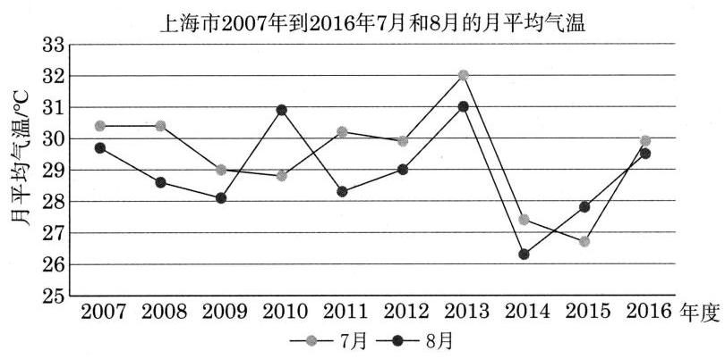

复习题A · 1
- 某高校研究人员希望调查该校大学生平均每天的自习时间. 他调查了 100 名大学生,发现他们每天的平均自习时间是 . 这里的总体是 ( )
A. 该校的所有大学生;
B. 该校所有大学生的平均每天自习时间；
C. 所调查的 100 名大学生;
D. 所调查的 100 名大学生的平均每天自习时间.
答案与解析收起 / 展开
- B.
教师整合版 / 沪教版高中数学
必修第三册
第13章统计 · 保留教材主线与原题
教材与正式教参整合
在统计问题中，研究对象的全体叫做总体，总体中的每一个对象叫做个体，从总体中抽取的一部分个体叫做这个总体的一个样本，样本所包含个体的数量称为样本容量.
抽样调查是获取数据的一种重要方式，常用的抽样方法有简单随机抽样、分层随机抽样等.
除了初中学习的扇形图、折线图、频数分布直方图外，还有以下几种统计图表:
(1)频率分布表和频率分布直方图:可用于表示数据在不同区间上的分布情况；
(2)茎叶图:通常在数据量不大的情况下使用，其特点是保留了数据的原始信息；
(3)散点图:可以考察两组数据的变化趋势.
A. 该校的所有大学生;
B. 该校所有大学生的平均每天自习时间；
C. 所调查的 100 名大学生;
D. 所调查的 100 名大学生的平均每天自习时间.
A. 散点图； B. 条形图;
C. 茎叶图; D. 扇形图.
| A | B | C | |
| 舒适型/辆 | 35 | 28 | 15 |
| 经济型/辆 | 50 | 72 | 40 |
试设计一个抽样方案, 从该月购买轿车的客户中抽取 20 位, 调查他们的满意度.
故每层应抽取的样本量为
A 类舒适型、A 类经济型、B 类舒适型、B 类经济型、C 类舒适型、C 类经济型的轿车不妨应抽取量:3、4、2、6、1、4.
| 16.3 | 13.2 | 17.7 | 14.3 | 16.4 | 19.8 | 13.5 | 14.5 | 11.7 | 14.1 |
| 14.8 | 17.2 | 13.8 | 15.4 | 16.3 | 15.7 | 18.5 | 16.8 | 17.9 | 15.9 |
| 17.6 | 15.4 | 16.8 | 21.4 | 16.5 | 18.1 | 16.0 | 20.3 | 16.6 | 19.5 |
(1)选择适当的组距，制作一张频率分布表;
(2)在(1)的基础上，绘制一幅频率分布直方图.
| 分组 | 频数 | 频率 |
| [11.7,13.7) | 3 | 0.1 |
| [13.7,15.7) | 7 | 0.23 |
| [15.7,17.7) | 12 | 0.4 |
| [17.7,19.7) | 5 | 0.17 |
| [19.7,21.7) | 3 | 0.1 |
绘制频率分布直方图如下:

图 13-R8
| 64 | 67 | 70 | 72 | 74 | 76 | 76 | 79 | 80 | 81 |
| 82 | 82 | 83 | 85 | 86 | 88 | 91 | 91 | 92 | 93 |
| 93 | 93 | 95 | 96 | 96 | 97 | 97 | 99 | 100 | 100 |
| 102 | 104 | 106 | 106 | 107 | 108 | 108 | 112 | 112 | 114 |
| 116 | 118 | 119 | 119 | 122 | 123 | 125 | 126 | 128 | 133 |
试用这些数据绘制一幅茎叶图.
| 124.9 | 124.7 | 126.2 | 124.9 | 124.2 | 124.9 | 123.7 |
| 121.4 | 126.4 | 127.7 | 121.9 | 124.4 | 125.2 | 123.7 |
| 122.7 | 124.2 | 126.2 | 125.2 | 122.2 | 125.4 |
回答下列问题:
(1)20 罐茶叶的平均质量 是多少，标准差 是多少？
(2)有多少罐茶叶的质量位于 与 之间,所占的百分比是多少?
| 年份 | 1月 | 2 月 | 3 月 | 4 月 | 5 月 | 6 月 | 7 月 | 8 月 | 9 月 | 10 月 | 11 月 | 12 月 |
| 2007 | 5.9 | 9.8 | 12.1 | 15.9 | 22.9 | 25 | 30.4 | 29.7 | 25.4 | 20.6 | 14.2 | 9.8 |
| 2008 | 4.5 | 4.2 | 11.6 | 16.1 | 21.8 | 24.2 | 30.4 | 28.6 | 26 | 21 | 13.3 | 7.9 |
| 2009 | 4.3 | 9.3 | 10.8 | 16.7 | 22.5 | 26.3 | 29 | 28.1 | 25.4 | 21.4 | 12.4 | 6.9 |
| 2010 | 5.7 | 7.7 | 9.6 | 13.3 | 20.9 | 24.1 | 28.8 | 30.9 | 26.2 | 19.3 | 14.2 | 8.1 |
| 2011 | 1.9 | 6.5 | 9.5 | 16.2 | 21.9 | 24.4 | 30.2 | 28.3 | 24.7 | 19.3 | 16.7 | 6.9 |
| 2012 | 5.1 | 4.8 | 9.8 | 17.6 | 21.6 | 24.7 | 29.9 | 29 | 23.9 | 20.1 | 12.6 | 6.6 |
| 2013 | 4.6 | 6.8 | 11 | 15.3 | 21.3 | 24.1 | 32 | 31 | 25 | 20 | 13.4 | 6.1 |
| 2014 | 6.6 | 6.1 | 11.5 | 15.7 | 21.7 | 23.3 | 27.4 | 26.3 | 24.2 | 20.2 | 14.8 | 5.7 |
| 2015 | 6 | 6.8 | 10.6 | 15.9 | 20.5 | 24.2 | 26.7 | 27.8 | 24.2 | 19.6 | 14 | 7.8 |
| 2016 | 4.4 | 6.9 | 11 | 16.7 | 20.6 | 24.2 | 29.9 | 29.5 | 24.9 | 20.8 | 13.6 | 9.1 |
数据来源: 上海统计年鉴.
回答下列问题:
(1)10 年中每年最冷的月份相同吗？
(2)10 年中哪个月份的气温波动最大？
(3)10 年中哪一年的气温波动最大？
(4)绘制 10 年中 7 月份与 8 月份气温的折线图，比较气温的高低.
1.(1)找出每一年的 12 个月份的月平均气温的极小值:
| 年份 | 2007 | 2008 | 2009 | 2010 | 2011 | 2012 | 2013 | 2014 | 2015 | 2016 |
| 气温极小值月份 | 1月 | 2月 | 1月 | 1 月 | 1 月 | 2月 | 1月 | 12 月 | 1月 | 1月 |
| 气温极小值 | 5.9 | 4.2 | 4.3 | 5.7 | 1.9 | 4.8 | 4.6 | 5.7 | 6 | 4.4 |
由上表可知, 10 年中每年最冷的月份并不相同.
(2)气温的波动用极差来衡量,我们可以计算 2007 年到 2016 年这 10 年间 1 到 12 月份的月平均气温的极差分别为:
| 月份 | 1 | 2 | 3 | 4 | 5 | 6 | 7 | 8 | 9 | 10 | 11 | 12 |
| 极差 | 4.7 | 5.6 | 2.6 | 4.3 | 2.4 | 3 | 5.3 | 4.7 | 2.3 | 2.1 | 4.3 | 4.1 |
由上表可知, 2 月份的极差最大, 所以说 10 年中 2 月份的气温波动最大.
(3)我们可以计算 2007 年到 2016 年这 10 年间每一年的月平均气温的极差分别为:
| 年份 | 2007 | 2008 | 2009 | 2010 | 2011 | 2012 | 2013 | 2014 | 2015 | 2016 |
| 极差 | 24.5 | 26.2 | 24.7 | 25.2 | 28.3 | 25.1 | 27.4 | 21.7 | 21.8 | 25.5 |
由上表可知, 2011 年的月平均气温的极差最大, 所以说 10 年中 2011 年的气温波动最大.
(4)10 年中 7 月份和 8 月份月平均气温的折线图如下:

图 13-R10
从折线图上看, 在不同的年份 7 月份和 8 月份的气温有高有低, 但是整体看 7 月份(蓝色折线)的气温略高于 8 月份(橘色折线). 通过计算十年间 7 月份和 8 月份的月平均气温的平均值分别为 和 ,可见确实 7 月份的月平均气温高于 8 月份.
| 学生编号 | 第 1 次 | 第 2 次 | 第 3 次 | 第 4 次 |
| 1 | 90 | 82 | 97 | 100 |
| 2 | 103 | 86 | 101 | 92 |
| 3 | 77 | 83 | 106 | 87 |
| 4 | 94 | 93 | 99 | 99 |
| 5 | 89 | 97 | 93 | 90 |
| 6 | 101 | 79 | 87 | 95 |
| 7 | 91 | 92 | 91 | 93 |
| 8 | 82 | 94 | 100 | 106 |
| 9 | 88 | 78 | 95 | 78 |
| 10 | 83 | 88 | 104 | 89 |
| 学生编号 | 平均值 | 标准差 |
| 4 | 96.3 | 2.8 |
| 2 | 95.5 | 6.9 |
| 8 | 95.5 | 8.9 |
| 1 | 92.3 | 6.9 |
| 5 | 92.3 | 3.1 |
| 7 | 91.8 | 0.8 |
| 10 | 91 | 7.8 |
| 6 | 90.5 | 8.3 |
| 3 | 88.3 | 10.8 |
| 9 | 84.8 | 7.2 |
我们从上表中可以看出 4 号同学的四次测验成绩的均值最大, 标准差也不大, 所以如果只推荐一位同学参加比赛, 那么可以推荐 4 号同学. 而如果需要 4 名同学参加比赛, 从平均值来看, 1 号和 5 号的平均值相同, 但是 5 号的标准差较小, 成绩相对较为稳定, 所以可以推荐 4 号、2 号、8 号和 5 号同学参赛.
| 1344 | 1428 | 1083 | 1239 | 1381 | 1099 | 1607 | 1041 | 1130 | 1610 |
| 1445 | 921 | 931 | 1100 | 1197 | 1282 | 1549 | 1463 | 901 | 1354 |
| 1378 | 1752 | 1032 | 968 | 902 | 1804 | 1051 | 1319 | 1223 | 1124 |
请利用百分位数来为该部门设计奖励方案.
对样本从小到大进行排序:
110011241130 1197 1223 1239 1282 1319 1344 1354
1378 1381 1428 1445 1463 1549 1607 1610 1752 1804
由 ,得第 50 百分位数为有序样本中第 15 个数 1223 和第 16 个数 1239 的平均数,为 1226 . 由 ,得第 90 百分位数为有序样本中第 27 个数 1607 和第 28 个数 1610 的平均数, 为 1608.5 , 为便于操作, 我们取 1609 . 由于样本是随机抽取的, 我们可以估计该客服部门员工通话数量的第 50 百分位数和第 90 百分位数分别为 1226 和 1609 . 我们可以规定奖励方案如下:每个月与客户通话数量高于 1226 的员工可以拿到基本奖励; 每个月与客户通话数量高于 1609 的员工还可以拿到额外奖励.
统计学是一门应用学科，在服务于解决现实问题的同时，也促进了自身的发展. 在对抗霍乱的斗争中，人们通过统计学了解了疾病如何在人群和地区之间传播，使得流行病学取得了重大突破.
霍乱是一种古老的、世界性的传染病，曾多次大规模地爆发. 当时流行的观点认为霍乱是经空气传播的, 但是约翰・斯诺(J. Snow)医师认为霍乱是经饮用水传播的. 为了证明自己是正确的，斯诺尽可能多地收集并分析过去霍乱爆发的信息，然而他的观点却遭到许多批评. 他意识到要想说服别人、挽救生命，就需要更多、更有说服力的数据.
1854 年, 伦敦爆发霍乱, 10 天内夺去了 500 多人的生命. 斯诺用标点地图的方法研究了当地水井分布和霍乱患者分布之间的关系，发现在伦敦布劳德大街的一口水井供水范围内霍乱罹患率明显较高，并最终凭此线索找到该次霍乱爆发的源头:一个被污染的水泵. 然而, 斯诺推理出的霍乱与饮用水的统计关系却未能说服当时的权威人物. 后来, 这些权威人物勉强同意把水泵的把手卸掉，可那时霍乱实质上已经结束了.
1866 年, 在第四次世界性霍乱爆发中, 伦敦也受到瘟疫的袭击. 当时有一位名叫威廉姆・法尔(W. Farr)的政府官员和统计学家，他熟悉约翰·斯诺关于霍乱传播机制的理论， 因此检查了当地的饮用水水源，发现当地供水公司使用的几个池塘已经被污染，于是他利用自己在政府的影响，组织这家公司从其他池塘取水. 疫情迅速结束. 这是统计学第一次使政府制止了一场传染病的传播.
约翰・斯诺在有关事件中的工作被认为是流行病学的开端. 他研究的是疾病和饮用水水源之间的关系, 他的统计结论是霍乱是通过饮用水传播的, 但却不能解释霍乱是什么. 由此可知, 统计学研究擅长揭示事物之间的关系, 而不是解释事物本身.
| 59226000 | 49840128 | 66175168 | 39682927 | 43772366 | 27096623 |
| 92580956 | 43890890 | 46482834 | 59743458 | 29778149 | 64608925 |
| 91685307 | 17337298 | 29849526 | 37515923 | 03886191 | 14679054 |
| 49040040 | 36160806 | 55336993 | 30357068 | 45717397 | 18435701 |
| 17355239 | 47454753 | 01644305 | 44017425 | 26545229 | 10694745 |
| 93793904 | 20989216 | 04687617 | 29338350 | 26618921 | 64762526 |
| 39832776 | 39918535 | 32591131 | 40469235 | 04982212 | 20671263 |
| 62816846 | 05710346 | 57234293 | 18186926 | 04002237 | 63106244 |
| 47428458 | 84171044 | 10027759 | 66564387 | 46470075 | 06909727 |
| 80441606 | 15411242 | 70519846 | 39771512 | 53558695 | 43341615 |
| 72766166 | 96710610 | 82836180 | 87215656 | 79350966 | 62944853 |
| 41099393 | 28461623 | 46336299 | 80183929 | 76362103 | 01107346 |
| 81801784 | 01920938 | 92141312 | 20680683 | 25360563 | 82895100 |
| 69905310 | 65353900 | 57493311 | 31459391 | 21624304 | 38112455 |
| 59787917 | 95779114 | 11625733 | 77657169 | 01541345 | 82568365 |
| 75024229 | 11736617 | 63524669 | 80467176 | 44490095 | 43439111 |
| 50953656 | 45517057 | 71697014 | 14268802 | 00909885 | 02440992 |
| 45438420 | 22838556 | 58513683 | 42537733 | 36896297 | 14173518 |
| 88283497 | 13495564 | 60931706 | 78103530 | 12791687 | 18670716 |
| 59858423 | 56963372 | 93311792 | 52654671 | 93675422 | 54240310 |
| 35402548 | 26206052 | 79415738 | 27049431 | 22956827 | 24659231 |
| 81650727 | 50567781 | 44380924 | 96705937 | 28085550 | 48201683 |
| 97491830 | 29554465 | 09692932 | 46640378 | 96584415 | 76853466 |
| 19328695 | 68057304 | 18440085 | 80531471 | 04559480 | 61312472 |
| 83654814 | 33515828 | 72081768 | 39301395 | 73382204 | 62864708 |
| 23730036 | 83128893 | 06915888 | 11575032 | 32443830 | 15028558 |
| 21841022 | 40298849 | 34288275 | 43583753 | 89795190 | 05576701 |
| 09503674 | 09459742 | 80365675 | 24044018 | 51140183 | 93365031 |
| 22187831 | 37117105 | 03329104 | 85378509 | 61275118 | 31238207 |
| 45360022 | 03787150 | 30671289 | 05696497 | 21721212 | 07393401 |
| 16243872 | 07651410 | 24024160 | 08204650 | 95547235 | 75024259 |
| 33950051 | 40780663 | 53727573 | 58289968 | 21182191 | 38902726 |
| 80004221 | 10451800 | 87562775 | 61850029 | 00520223 | 91212898 |
| 99498653 | 66132909 | 46045108 | 29213428 | 47913888 | 98284202 |
| 52265912 | 78192281 | 75328224 | 37526839 | 70511454 | 39058676 |
| 57483470 | 84908759 | 43278083 | 30479696 | 68472456 | 08700563 |
| 72995400 | 99491703 | 21963886 | 69213938 | 30927014 | 19074667 |
| 75620520 | 40393927 | 73424446 | 32710498 | 99431490 | 93188160 |
| 24212509 | 69641196 | 24603122 | 54708123 | 88329881 | 90176457 |
| 37740024 | 84483003 | 86108195 | 99302536 | 78710561 | 66736716 |
| 30737119 | 31875443 | 91106808 | 45469269 | 09324297 | 35671898 |
| 07412122 | 31820088 | 71694552 | 88912618 | 85933858 | 57498645 |
| 55537748 | 47307193 | 44162744 | 35730046 | 35204714 | 31794878 |
| 50637513 | 68444728 | 05230553 | 19076435 | 68768912 | 90487194 |
| 77193349 | 31373649 | 19944649 | 80774718 | 26132115 | 19032160 |
| 90704894 | 99744927 | 73331642 | 24578121 | 90907615 | 25495469 |
| 57291537 | 25966686 | 40631857 | 69673562 | 88588804 | 20704169 |
| 11982254 | 01668184 | 27721819 | 09600397 | 42976310 | 94777888 |
| 99095642 | 15419077 | 87150597 | 18928524 | 55973643 | 70184445 |
| 95482772 | 48386040 | 65559303 | 91815865 | 88763922 | 98306095 |